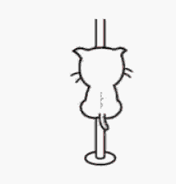
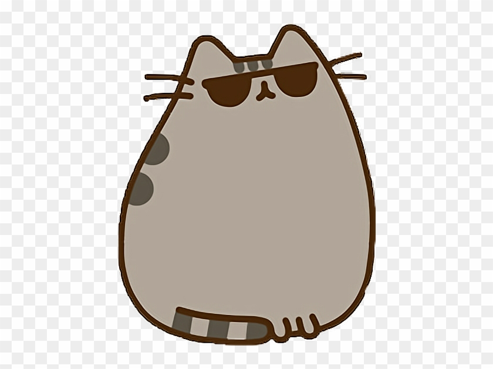
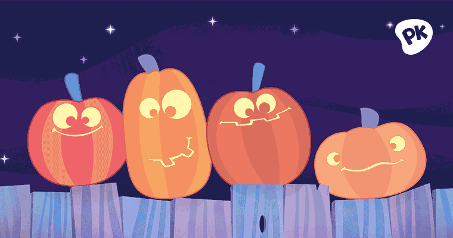
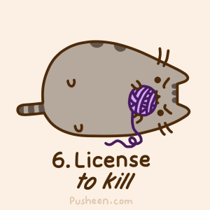
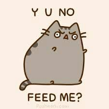
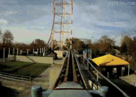

It was such a beautiful day today. Birds were chirping and sun was shining brightly in our faces. On such a fine day, we decided to go to the zoo. At the zoo, we saw numerous animals that include: giraffes, tigers, lions, and penguins. I even got a picture with the flamingos. It was an intriguing and memorable trip. 
Due to a heavy thunderstorm yesterday, the air was fresh and clear. My friends and I packed the car to travel to a nearby campsite. We parked our vehicle in our assigned spots. Once we got there, we looked for firewood to start the campfire. We cooked barbecue for supper, pitched our respective tents and had a good night's sleep. 
Never having been to a pole competition, Tommy was frightened. He had decided to leave his comfort zone and attend a pole tournament. When he arrived, he was surrounded by a myriad of people with sculpted bodies of greek gods and goddesses. Tommy has never been so starstruck before. He watched the event in giddy excitement and left deeply satisfied. 
I woke up early this morning and started off grooming myself. I startled my servants awake because they had the nerve to forget my breakfast. After consuming my morning intake, I got my regular full body massage. Sometimes my servants forget when to stop with the massage and at this time I remind myself that I come from a long line of tigers and lions. After the reminder, I get them to stop with a swipe of my claws. I love my parents but they can be too much sometimes for a little kitty. 
I took a deep breath of the spooky chilled night air, trying to summon as much courage as I can muster. My stomach did a somersault as I gazed upon the haunted mansion. I know I've been bragging to my friends about my courage but actually standing here gave me goosebumps. I took one step towards the mansion and felt nauseous, I stumbled backwards and decided being a coward is better than puking all over myself. I shrugged as I passed the mansion to the next house to get more candy. I'll just brag about getting the most candies tomorrow. 
My humans ignored me again today. It's starting to irk me since I'm getting no reaction from me screaming into their faces. There's nothing I can typically do but tonight I have a plan to get back at my dog mama. When the cat master is asleep, I shall rummage through the trashcan and blame mama for the mess. There is no way my plan could fail. Update: apparently mama wasn't asleep yet when I executed my plan. They tried to interrogate me but I avoided eye contact at all costs and it seemed effective, they have dropped their suspicions. I will need to be more careful with my next revenge plot. 
As a constantly growing kitten, I require daily nutrition. Getting all my vitamins makes my fur shiny, gives me energy to run as fast as the wind, and allows me to hunt my humans like the natural predator I was destined to become. I rest during the day so I can retain my energy for my nightly hunts. Since we don't have mice running around, I designated my human's feet as my prey. Oh my tummy is rumbling, it MUST be my food time. I'll be right back after I chow down on my gourmet food made by my chef mama. 
I can feel my adrenaline rushing through my veins. My breath got caught at the back of my throat as air rammed into my lungs. My scream cut short due to the lack of oxygen intake. I can see the sky, the water next to the amusement park, and my intestines all at once. I shakily got off the ride as it ended and vowed to avoid rollercoasters for life as I waited for my friends to peer pressure me into riding another one. 